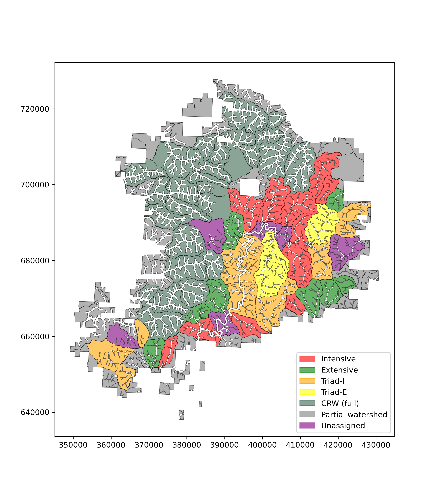
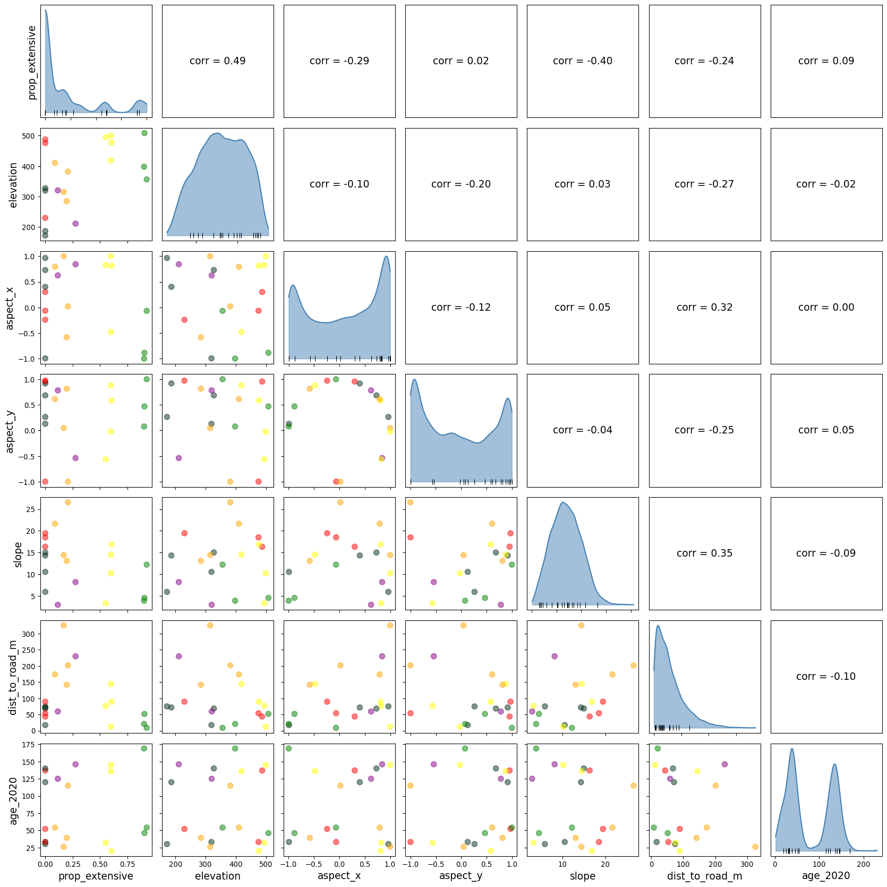
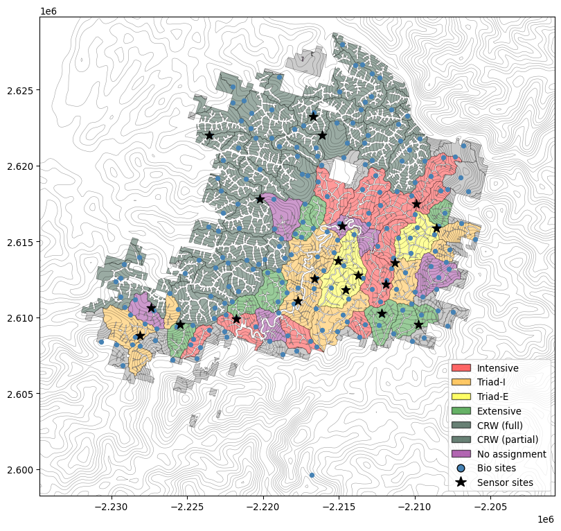

We want to identify sensor node locations that span a range of environmental conditions, are human-accessible (i.e., close to roads), while also dove-tailing with existing research, including the biodiversity assays and the triad design. Specifically, suppose we wish to fit the model \[
y_i = \mathbf{x}_i^\top {\boldsymbol \gamma} + (\mathbf{a}^\top \mathbf{Z}_i){\boldsymbol \beta} + \epsilon_i
\] to some response \(y_i\) measured at the sub-watershed scale such that \(i\) indexes the sub-watershed. The 3-vector, \(\mathbf{x}_i\), measures the proportion of each triad management scheme, intensive, extensive, and reserve, planned for the subwatershed, while \(\mathbf{Z}_i\) is an \(n_i \times p\) matrix of control variable measurements within sub-watershed \(i\). These represent the multiple conditions over which we want take measurements across the study region. The vector \(\mathbf{a}\) determines the aggregation strategy over the measurements within a subwatershed. For example a vector of length \(n_i\) with elements \(\mathbf{a} = (1/n_i, 1/n_i,...)^\top\) would average the measurements of a given control variable across the sensors within a subwatershed. The vector \(\boldsymbol \beta\) contains the coefficients for the aggregated control variables and \(\epsilon_i\) is a random error term.
Assume for now that the Triad design is fixed such that \(\mathbf{X}\) is known. The objective is to maximize the variability of environmental conditions captured by the sensor locations across the study area while also minimizing confounding with the triad proportions, all under logistical constraints. One option here is to maximize the minimum eigenvalue of the empirical information matrix:
\[
O(\mathbf{X}, \mathbf{Z}_1, \mathbf{Z}_2,...) = \lambda_{\text{min}}(\mathbf{M}^\top \mathbf{M}) - \gamma_r \sum_{i,j} \phi({d_{ij}})
\] where \(\lambda_\text{min}({\mathbf W})\) denotes the minimum eigen value of a square matrix \(\mathbf{W}\), \(\underset{(n \times (p + 3))}{\mathbf{M}}\) is the columnwise concatenation of \(\mathbf{X}\) and \(\underset{(n \times N)}{\mathbf{A}}\underset{(N \times p)}{\mathbf{Z}}\), where \(\mathbf{A}\) are the aggregation vectors arranged along rows such that row one contains the elements of \(\mathbf{a}_1\) in the columns \(1,2,...,n_1\), with zeros elsewhere, row two contains the elements of \(\mathbf{a}_2\) in the columns \(n_1 + 1, n_1 + 2,..., n_1 + n_2\), and so on. The matrix \(\mathbf{Z}\) contains the control variable measurements for each location on the landscape in rows and different control variables in columns. Finally, \(d_{ij}\) is the distance of site \(j\) within sub-watershed \(i\) from the nearest road while \(\phi\) is a desired transformation and \(\gamma\) is a penalty factor. Both \(\gamma\) and any parameters defining \(\phi\) are hyperparameters that can be tuned.
Here, I use \(\lambda = 1\) and \(\phi(\cdot) = \exp(\theta d_{ij}) - 1\) with \(\theta = \log(0.5) \times 10^{-3}\) such that no penalty is incurred if the site is adjacent to a road, but the penalty increases to an amount that is virtually insurmountable given the scale of the minimum eigenvalue once the design point is placed more than 1 km from the road.
2 Data wrangling
Several data wrangling steps were necessary to build a set of candidate sensor locations with the environmental covariates needed for the objective function above. For this analysis, I started with the ESRF_Allocations_20260825.shp layer provided by Kaitlyn Athearn on 25 August 2026, the 2023 biodiversity survey site centers (from Maggie Hallerud), and the ODF roads layer (from T-drive). This section summarizes those steps and their results, while the full process can be found on the data wrangling page.

Figure 1: Spatial arrangement of the triad treatments across sub-watersheds.
2.1 Terrain covariates
Elevation, slope, and aspect come from a 30 m DEM (USGS 3DEP, via py3dep). The script python/get_course_dem.py smooths this DEM, downsamples it to a 120 m grid, and derives slope and aspect from it, decomposing aspect into x/y components to avoid the ‘wraparound’ issue at 360\(^\circ\) / 0\(^\circ\).
2.2 Building the candidate location grid
Using the centroids of each 120 m grid cell in the landscape, I built a spatial points data frame of candidate sensor locations, then attached the triad treatment of the sub-watershed containing each point, stand age in 2020 from the DSL stand inventory, and, for cells that contain an existing biodiversity monitoring site, that site’s station ID (existing biodiversity sites are “snapped” to their containing grid cell’s center). Candidate locations falling in “partial” sub-watersheds were dropped since they were not part of the experimental design. Finally, I computed each candidate location’s distance to the nearest road, used in the road-proximity penalty described above.
The resulting candidate locations and sub-watershed/treatment layers are saved to Data/sensor_optim/data_for_optim.gpkg (layers candidate_locs and esrf), along with the reprojected biodiversity site locations (layer bio_sites), for use by the optimization scripts and the results below.
Important
Because the potential sensor locations are located at the center of the grid cell, they will not align exactly to the biodiversity plot centers, even if the chosen sensor locations indicates it is “at the biodiversity site center”. Instead, it will simply be the grid location nearest to the indicated biodiversity plot.
3 Two ways to optimize
Depending on how flexible we want to be in adhering to the existing biodiversity plot network, we can optimize the above objective function in multiple ways. The first option below relaxes the strict adherence to the biodiversity plots and only uses them as a starting point, while the second option finds the “best” network design, constrained to the biodiversity plot locations.
3.1 Grid-based stochastic search
For the more flexible, grid-based option, we search over the dense 120 m DEM grid of candidate locations built above, proposing moves to spatially adjacent grid cells (@note-alg1). This is useful when sensor locations are free to be placed almost anywhere on the landscape.
Algorithm 1
Initialize random starting locations.
for t in treatments:
Assign a minimum of \(n_t\) sensor sites to treatment \(t\). Randomly select a polygon assigned to treatment \(t\).
Select the next polygon assigned to treatment \(t\) at random out of those that are not adjacent to any of those already selected.
If a non-adjacent watershed is not available, select the next polygon uniformly at random from those assigned to treatment \(t\) and those that remain unassigned (purple watersheds in Figure 1).
For each selected polygon, select a candidate location uniformly at random out of those that share a cell with the biodiversity sites (this starts the algorithm near biodiversity sites, then allows it to expand to “better” locations).
Set starting difference at a default value, diff = 999.
while diff > tol for a set tolerance tol:
for s in sites:
Propose 1 of \((2r + 1)^2 - 1\) possible jumps to an adjacent grid cell, where \(r\) serves as a sort of “radius” in the discretized grid determining how large a neighboorhood to consider in the proposals.
if the proposed grid cell lowers the objective function, then accept the proposal and exchange site s for the proposal.
else keep site s
end for
Compute the reduction in the objective function as diff.
Code for the optimization runs can be found in python/sensor_site_optim.py, which draws its core search routines (stochastic_search() and helpers) from python/sensor_site_optim_lib.py.
#| eval: false
#| code-fold: false
pixi run python python/sensor_site_optim.py
3.1.2 Results

Pairs plot showing scatters between each pair of environmental variables and the porportion of extensive stand treatments in the watershed. Colors of the points follow the color scheme in Figure 1. The density plots along the diagonal show the distribution of each variable over the full set of candidate sensor locations with a rug plot at the bottom showing the values at the selected locations. The upper triangle gives Pearson’s correlation coefficient between each pair of variables.
Code
from matplotlib.patches import Patchfrom matplotlib.lines import Line2D# reproject to DEM CRS so everything alignsdem_crs = dem_120_sm.rio.crseus_proj = eus.to_crs(dem_crs)fig, ax = plt.subplots(figsize=(10, 10))# contour lines from dem_120_smxs = dem_120_sm.x.valuesys = dem_120_sm.y.valueselev = dem_120_sm.values[0]ax.contour(xs, ys, elev, levels=20, colors='black', linewidths=0.4, alpha=0.4)# triad polygons colored by treatment (replicates fig-trt-sp)eus_proj.plot( ax=ax, color=eus_proj['triad_trt2'].map(color_map).fillna('grey'), edgecolor='black', linewidth=0.5, alpha=0.4)# biodiversity monitoring sites in greybio_sites.to_crs(dem_crs).plot(ax=ax, color='steelblue', markersize=20, zorder=3)# optimized sensor locations in blackbest['data'].to_crs(dem_crs).plot(ax=ax, color='black', markersize=100, marker='*', zorder=4)# custom legend: one patch per treatment actually present, plus point markerstrt_label_map = {'intensive': 'Intensive', 'triad_i': 'Triad-I', 'triad_e': 'Triad-E', 'extensive': 'Extensive','crw_full': 'CRW (full)', 'crw_partial': 'CRW (partial)','none': 'No assignment'}trt_handles = [ Patch( facecolor=color_map.get(t, 'grey'), edgecolor='black', alpha=0.6, label=trt_label_map.get(t, 'Not considered') )for t in trt_label_map.keys()]point_handles = [ Line2D([0], [0], marker='o', color='none', markerfacecolor='steelblue', markersize=8, label='Bio sites'), Line2D([0], [0], marker='*', color='none', markerfacecolor='black', markersize=12, label='Sensor sites')]ax.legend(handles=trt_handles + point_handles, loc='lower right', fontsize=10)plt.show()# # save results# fig.savefig(here('Figures/site_map_01.png'), dpi = 300, bbox_inches = 'tight')# also save selected bio sites as a layerbest['data'].to_file( here('Data/sensor_optim/results_grid_run01.gpkg'), driver='GPKG')

Figure 2: Triad management units with biodiversity monitoring sites (blue), optimized sensor locations (black), and elevation contours.
3.1.3 Notes to review
I used weights to allocate sites to triad treatment–stand allocation combinations such that each sub-watershed type (CRW, Intensive, Triad-I, Triad-E, and Extensive) received four sensor nodes. Within each sub-watershed type, I distributed sensor nodes evenly across the stand allocation types (reserve, intensive, extensive) based on how many stand types are available in a given watershed type (e.g., only reserve and intensive stands exist in intensive watersheds). For Triad-I watersheds, the fourth sensor node was randomly assigned to a stand type. For Triad-E waterhsheds, the fourth sensor node was selected out of the unassigned wathersheds that used to be Triad-E.
There is not currently any criterion to help ‘spread points out’ in space. This could be added, but selecting non-adjacent experimental units is the only constraint to limit spatial clustering at the moment.
I used a ‘jump radius’ of 2, meaning that the algorithm could ‘try out’ 1 of any in a 5 \(\times\) 5 grid (minus the center cell) in an attempt to improve the objective function. I didn’t notice much difference across runs when playing around with changing this parameter.
Based on some initial exploration, I noticed that the trailing eigen-values tended to be between about -0.5 and 3.5. I therefore set the distance penalty such that there was zero penalty for being at a road (distance = 0 m) and increasing exponentially, incurring a penalty of 3 at 1 km. This should make it very unlikely that any candidate locations are selected if they are more than 1 km from a road. We can adjust this as needed.
3.2 Option 2: Exchange search over existing biodiversity sites
Rather than searching a dense grid, this option restricts the candidate set to the sites that are already existing biodiversity monitoring stations, and picks the ‘best’ 20 of those. Because the candidate set is small and fixed, the search proceeds as a direct exchange algorithm instead of a grid-neighbor random walk:
Algorithm 2
Draw an initial set of 20 sites from the fixed biodiversity site pool.
These initial draws are done through stratefied random sampling, sampling from each watershed \(\times\) stand treatment combination as described in @note-alg1.
Set starting difference at a default value, diff = 999.
while diff > tol for a set tolerance tol:
for s in sites:
Evaluate swapping site s for every currently-unselected candidate in the pool.
Accept the single best swap for s if it improves the objective function; otherwise keep s.
end for
Compute the reduction in the objective function as diff.
Increment counters
end while.
The candidate pool itself is built from the raw biodiversity survey site locations (213 points), joined to the sub-watershed/triad-treatment layer and filtered down to 183 sites that fall inside a triad-assigned sub-watershed (sites outside the triad allocation or within ‘partial’ sub-waterhseds, were excluded). Elevation, slope, aspect, and stand age are borrowed from the nearest already-computed 120 m grid cell center (candidate_locs); distance to road is computed exactly at each site’s coordinate. During each step, a site can be swapped in for the current site if it falls in the same watershed \(\times\) stand allocation treatment combination and also improves the objective function.
3.2.1 Running the optimization routine
Note
Code for this option can be found in python/biodiv_site_optim.py, which draws its core search routine (exchange_search()) from python/biodiv_site_optim_lib.py.
#| eval: false
pixi run python python/biodiv_site_optim.py
Figure 3: Triad management units with all existing biodiversity monitoring sites (grey), and the optimized subset of 20 selected via the exchange search (black).